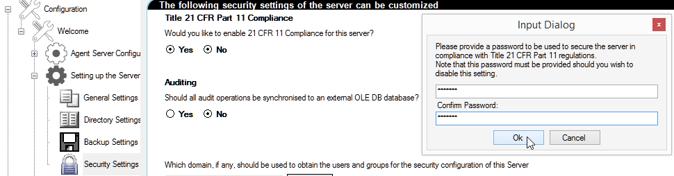

21 CFR 11 is a standard that defines the criteria and circumstances under which electronic records are considered to be trustworthy, reliable and equivalent to paper records by the FDA. This includes the auditing and authorization of changes to values.
When engineering and commissioning a system, the system is not required to comply with 21 CFR 11, it is only once the system is deployed that 21 CFR 11 compliance is required.
Therefore, you should ideally engineer your project, with 21 CFR 11 mode disabled, due to the design-restrictions that it imposes and then just before you start commissioning the project you can enable and configure the 21 CFR 11 mode. For more details of the controls and requirements required by 21 CFR 11, see 21 CFR 11 controls and requirements.
Note: 21 CFR 11 mode is enabled in the Server Security Settings page of the Adroit Config Editor utility.
21 CFR 11 compliance requires limiting system access to authorised individuals. Therefore the connection to the Adroit Agent Server is now secured to limit exactly which client connection to it is allowed to prevent unsanctioned access (from Classic or legacy Adroit Clients and third party applications).
Note: This means that one cannot use the Configurator to configure Adroit agents in the SmartUI Designer when using 21 CFR 11 mode - so all Agent Server configuration must occur in the Designer itself.
Changes to applicable data elements (values) are only allowed when an additional user provides authorization that this change in value may be made.
(values) are only allowed when an additional user provides authorization that this change in value may be made.
Note: Any changes that have not received authorization are not written and are purged if their authorization is denied.
All changes to required data elements (values) must be recorded with the user who initiated the change and if applicable the user who authorised this change.
These recorded (logged) changes include: the timestamp of the change; the change made; the initiating user and, if applicable the authorizing user, and a computed hash of all these fields to detect tampering.
For this reason the SmartUI Server natively includes the following functionality in its existing data element security:
Note: This functionality is now part of the SmartUI Server and is available even when one does not want to use 21 CFR 11 mode.
IMPORTANT: Due to the operational overheads imposed by 21 CFR 11 mode, you need to know beforehand exactly which values need to be audited and/or authorised.
For details on how to configure this for the required values, see Configuring the auditing and/or authorizing of value changes.
This functionality forms a core component in the SmartUI Server and is underpinned by a database to integrate across the platform (between Adroit and the SmartUI).
Note: While a mandatory SQL Server Compact database stores this audit information on the SmartUI Server, you can also specify another (remote) SQL Server database too.
You need to create the required users and/or groups within Windows first.
Each of these Windows users and/or groups need to be configured as "allowed" users and groups on each SmartUIServer, before they are able to log into the SmartUIServer and/or audit and/or authorise changes made to its values (data elements).
Note: In the SmartUI every value is known as a data element of a datasource, this is why data element security is used to configure the auditing change of values (data elements) and/or their authorization.
If users are required to access the SmartUI Server computer directly then to preserve the integrity of the 21 CFR 11 functionality, these users must only be given minimal rights (from a Windows security context). Only administrative users may be given extended rights.
IMPORTANT: Therefore ONLY specify your system administrator users and/or groups in this the Security Settings page of the SmartUI Server in the Adroit Config Editor, since these users and/or groups have immediate GLOBAL access to every aspect of your project, which includes the ability to write to all of the data elements.
The configuration (.config) files on the SmartUI Server computer must be made inaccessible (through directory and file level security) to prevent unauthorised users from:
Furthermore, if you choose to use an optional SQL Server database to also store the 21 CFR 11 auditing then you need to prevent unauthorised users from accessing this database too.
Note: For more information regarding the location and configuration of the 21 CFR 11 auditing databases, see Working with audited data element values.
This is performed in the Server Security Settings page of the Adroit Config Editor utility, as follows:
IMPORTANT: Only specify your system administrator users and/or groups in this page, since these users and/or groups have immediate GLOBAL access to every aspect of your project, which includes the ability to write to all of the data elements.
 To display this page of settings:
To display this page of settings:
Select the Yes option for the Title 21 CFR Part 11 Compliance option at the top of this page and provide the required password.
This password secures the connection to the Adroit Agent Server and also prevents the unauthorised disabling of this 21 CFR 11 setting itself.
IMPORTANT: If you forget your password then you MUST DELETE ALL your config files and project files and start again from scratch.
Note: When running an Adroit Agent Server and a SmartUI Server on two separate computers, BOTH computers must be configured for 21 CFR 11 mode using the SAME password.
This password is encrypted and stored in the configuration (.config) files on the SmartUI Server computer.
Since 21 CFR 11 requires that system access be limited to authorised individuals, access to these configuration files need to be limited through the use of directory and file level security.
Note: You can only change or disable this setting by providing the specified password.

Note: If you select the Yes option for the Auditing option also at the top of the Server Security Settings page, then you can specify the connection string to the optional SQL Server database that stores the 21 CFR 11 auditing in addition to the mandatory, local SQL Server Compact database.